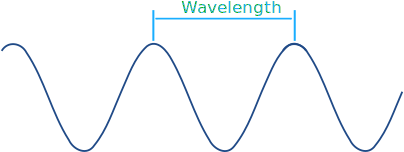
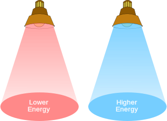
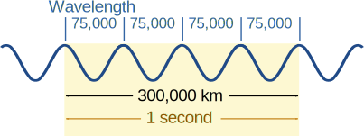
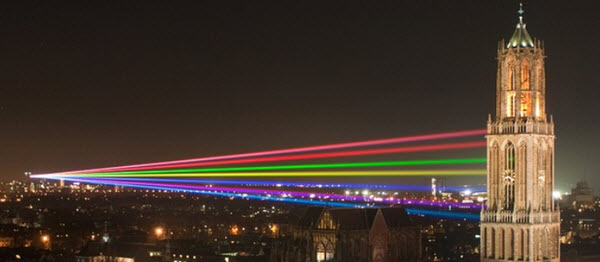
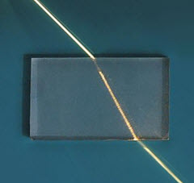
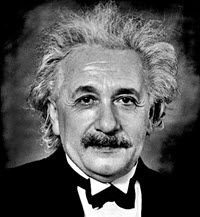
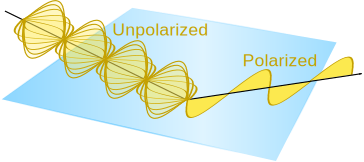
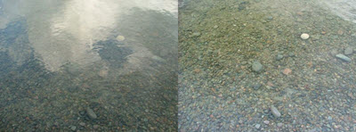

Light
We use light to see!
Visible light is the part of the electromagnetic spectrum that our eyes can see:
It is only a small part of the full spectrum, isn't it?
Visible Spectrum
Visible Light: the wavelengths that are visible to most human eyes.
The main colors, in order, go "Roy G Bv": Red Orange Yellow Green Blue Violet

As we see on this beautiful rainbow:
Wavelength

Light has a wavelength of about 380 nm to 750 nm, depending on color.
nm means nanometer, one billionth of a meter.
Example: red light has a wavelength of about 700 billionths of a meter (just less than one-millionth of a meter). Small!
Definitions vary, but here is a rough guide:
| Color | Wavelength Range (nm) |
|---|---|
| Red | 620–750 |
| Orange | 590–620 |
| Yellow | 570–590 |
| Green | 495–570 |
| Blue | 450–495 |
| Violet | 380–450 |
Frequency
The frequency of red light is about 400 THz (and for violet is about 800 THz)
THz means teraHertz, a trillion cycles per second
So red light vibrates at about 400 million million cycles per second. Fast!
Higher frequency (with shorter wavelength) has more energy:
- Red light has lower frequency, longer wavelength and less energy
- Blue light has higher frequency, shorter wavelength and more energy

Speed of Light
Light travels at almost 300,000,000 meters per second (to be exact: 299,792,458 meters per second) in a vacuum.
That is 300 million meters every second, or:
- 3 × 108 m/s
- 300,000 km/s
- 186,000 miles per second
At that speed light travels:
| Distance | Time | |
|---|---|---|
| 1 meter | in | 3.3 ns (3.3 billionths of a second) |
| Around the Earth's equator | in | 134 ms (134 thousandths of a second) |
| From Earth to Moon | in | 1.3 s |
| Surface of Sun to Earth | in | about 8 minutes |
It is so fast, but still takes about 8 minutes from the surface of the Sun to the Earth.
The symbol for this speed is c:
c ≈ 300,000,000 m/s
Light Can Travel Slower
We really shouldn't call it the speed of light, firstly because it applies to the whole electromagnetic spectrum, and gravity waves, and more. Maybe we could call it "Max Speed"!
But also because light only travels that speed in a vacuum! It can travel slower ...
| Medium | Speed million m/s |
|---|---|
| Vacuum | 299.8 |
| Air | 299.7 |
| Ice | 228 |
| Water | 225 |
| Ethanol | 220 |
| Glass | 205 |
| Olive oil | 204 |
| Diamond | 123 |
Wavelength and Frequency are Linked
The Wavelength and Frequency are related:
Frequency = Velocity Wavelength
Wavelength = Velocity Frequency
Assuming the light is in a vacuum, the velocity is the speed of light: 3 × 108 m/s
Let's try a simple example (in this case not a wavelength of light):
Imagine a very long wavelength of 75,000 km

Frequency = 300,000 km/s 75,000 km
= 4 /s
= 4 Hz
We can fit 4 of those wavelengths in 300,000 km, so it vibrates 4 times in 1 second.
So the frequency is 4 Hz (4 per second)
Or, the other way around, if we know it vibrates 4 times a second we can calculate its wavelength:
Wavelength = 300,000 km/s 4 /s
= 75,000 km
Example: Blue light has a wavelength of about 480 nm (480 × 10-9 m)
So the frequency is:
Frequency = 3 × 108 m/s 480 × 10-9 m
= 6.25 × 1014 /s
= 6.25 × 1014 Hz
Which is 625 TeraHertz
Light Travels in Straight Lines
Light travels in a straight line until its hits something, or it's path is changed by different densities, or by gravity.
Light from the Sun streams across the road.
The shadows also show that light travels in straight lines.

This light spreads out a little and is scattered by the atmosphere.

Laser beams making straight lines.

Wave
Light behaves as a wave, so it can:
- reflect (bounce off),
- scatter (bounce off in all directions),
- refract (change speed and direction)
- diffract (spread out past an opening)
- transmit (pass straight through)
- or get absorbed
Photons
Light also behaves as packets of energy called Photons.
- We can measure a photon's position and momentum.
- Photons have no mass, but each photon has an amount of energy based on its frequency (number of vibrations per second)
- Each photon has a wavelength
So it is like a particle and also like a wave. This is called the "wave-particle duality".

Einstein wrote:
"It seems as though we must use sometimes the one theory and sometimes the other, while at times we may use either."
Intensity
Intensity is power per area, usually in Watts per square meter:
Intensity = W/m2
Example: Sun on a small 100 square meter house
About 150 to 300 watts of energy are received from the Sun per square meter.
Let's choose the smaller number:
Intensity = 150 W/m2
How much Power is that over the whole roof?
Power = 150 W/m2 × 100 m2
Power = 15,000 W
So a small house gets about 15 kilowatts on it's roof, which is several times more than a household uses.
But that is only while the Sun shines, and only about 20% can be captured by typical solar panels
But that is still lots of energy from the Sun.
Inverse Square

Inverse Square: when one value decreases as the square of the other value.
Example: light and distance
The further away we are from a light, the less bright it is.

The brightness decreases as the square of the distance. Because the light is spreading out in all directions:
- the energy twice as far away is spread over 4 times the area
- the energy 3 times as far away is spread over 9 times the area
- etc
Polarization
Light is normally free to vibrate in any direction at right angles to its path.
But polarized light vibrates in one plane only:

Light gets partly polarized when it
bounces off surfaces like water or glass.
Polarizing lenses can block light from that plane, to cut down on reflected light and make it easier to see into water:

Without and with a polarizing lens
Fiber Optics
Light, and infrared, can be sent along fiber optic cables, carrying information coded into the wavelength.

Fiber optic cables
The light stays inside because of a special property of refraction: when the refractive index is lower on the outside, and the angle is not too steep, the light beam has total internal reflection on the inside:

Light bounces off the walls inside the cable
Fiber optic cables are much better than electrical wires:
- Wires get more "noise" (other signals that distort or interfere with the original) from power lines, TV, radio, lightning etc.
- Photons have no mass so can swap between 0 and 1 quickly. Electrons have mass and are slow in comparison
- Glass has much less resistance to light than copper does to electrical signals, so can go much further without needing a boost